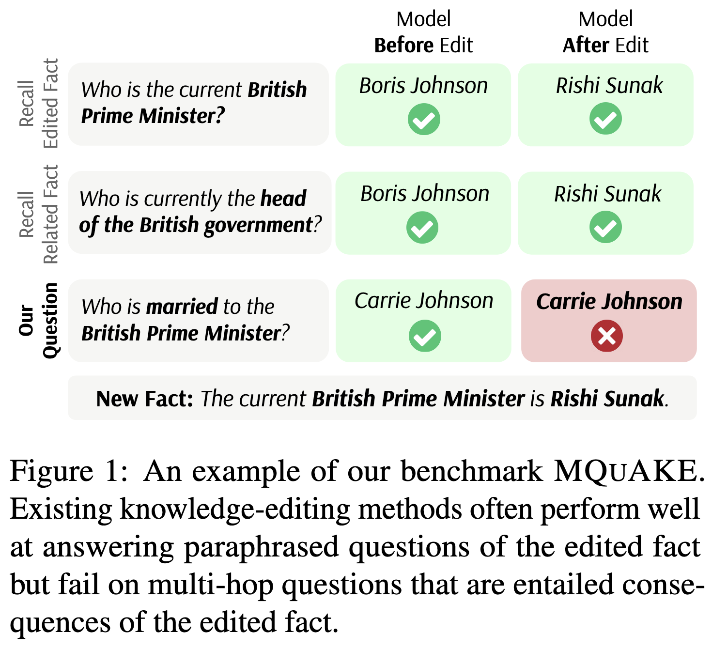

论文笔记 - MQuAKE: Assessing Knowledge Editing in Language Models via Multi-Hop Questions
1. Information
Title: MQuAKE: Assessing Knowledge Editing in
Language Models via Multi-Hop Questions
Link: MeLLo
Paper
Source: Empirical Methods in Natural Language
Processing (EMNLP)
Date: 2023
2. Summary
本文介绍了 MQuAKE (Multi-hop Question Answering for Knowledge Editing)，这是一个用于评估大型语言模型 (LLMs) 知识编辑效果的基准测试，通过多跳问题来评估。作者指出，当前的知识编辑方法虽然能够成功回忆编辑过的事实，但在需要基于编辑事实进行推理的多跳问题上表现糟糕。为此，他们提出了 MeLLo (Memory-based Editing for Large Language Models)，这是一种新颖的方法，通过将编辑过的事实存储在外部记忆中，并迭代地提示语言模型生成一致的答案。MeLLo 在处理多跳问题上显著优于现有方法，且无需额外训练。
3. Background
随着大型语言模型 (LLMs) 在各种应用中的广泛部署，其知识迅速过时的问题日益凸显。由于重新训练这些模型的成本过高，因此出现了通过更新模型权重来注入新事实的技术。然而，现有的评估范式主要关注模型是否能够回忆起新注入的事实，而忽略了模型在编辑事实后是否能够处理答案应随之改变的问题。这一评估缺口至关重要，因为它反映了模型整合新知识并进行推理的能力。
4. Research Objective
本研究的主要目标是开发一个全面的基准测试 MQuAKE，以评估 LLMs 的知识编辑方法的有效性。具体来说，该基准旨在评估编辑后的模型是否能够正确回答多跳问题，这些问题的答案应基于编辑事实的逻辑后果而改变。此外，作者还旨在提出一种新的方法 MeLLo，通过利用外部记忆存储编辑过的事实，并确保与编辑知识的一致性，从而有效处理多跳问题。
5. Method
5.1 问题定义
知识表示
- 事实表示为三元组 \((s, r, o)\)，其中 \(s\) 为主体，\(r\) 为关系，\(o\) 为客体。
- 模板 \(t_r(s)\) 用于将三元组转化为自然语言问题。
公式： \[ f^*(t_r(s)) = o^* \] 其中 \(f^*\) 表示编辑后的模型。
多跳问题构造

多跳问题链： \[ C=\left\langle\left(s_1, r_1, o_1\right),\left(s_2, r_2, o_2\right), \ldots,\left(s_n, r_n, o_n\right)\right\rangle \] 满足 \(o_i = s_{i+1}\)
知识编辑公式
- 单个编辑： \(e = (s, r, o \to o^*)\)
- 多个编辑： \(K(f, E) = f^*\) 其中 \(K\) 为知识编辑函数。
5.2 Mello 方法
- 提出了新的知识编辑方法 MeLLo，核心思想如下：
- 存储已编辑事实：将编辑事实存储在外部记忆中。
- 逐步推理：将多跳问题分解为子问题，模型逐步回答并检查答案与已编辑事实的一致性。
- 自我校验：模型检查推理步骤中是否违反已编辑知识，必要时用检索到的已编辑事实覆盖冲突答案，从而确保推理结果与已编辑知识一致。
- MeLLo 不需要额外训练，可以应用于大型黑箱 LMs，如 GPT-3.5。
6. Conclusion
本文提出了 MQuAKE，这是一个用于评估 LLMs 知识编辑方法的基准测试，通过多跳问题来评估。结果表明，现有方法在处理多跳问题时效果不佳，突显了开发更忠实的知识编辑技术的必要性。提出的 MeLLo 方法通过利用外部记忆存储编辑过的事实，并通过迭代提示确保一致性，展示了卓越的性能。